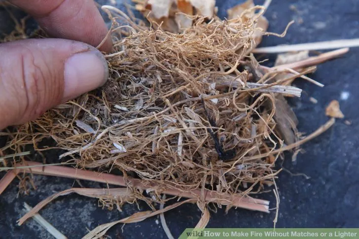

1. First make a tinder nest out of any dry plant material that easily catches fire. You can use dry grass, leaves, small sticks or bark.
2. Fine a piece of wood for the base of your hand drill and use a knife to cut a small, V-shaped notch in the center of your piece of wood.

3. Place small pieces of bark beneath the notch and take your spindle stick and place it in the notch.
4. Hold the stick between your two flat palms and begin to roll the spindle back and forth.
5. Continue until embers form and then transfer the small piece of bark to a tinder nest.